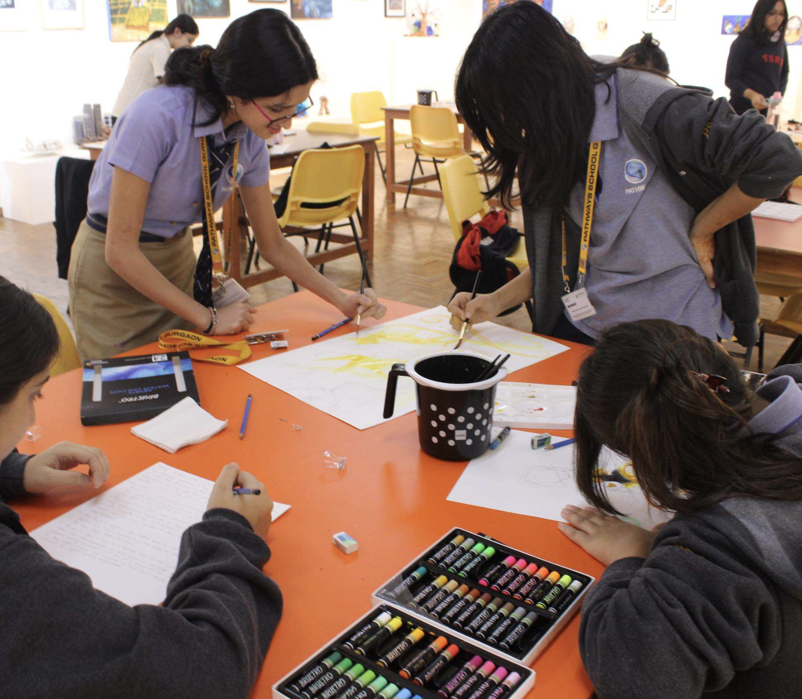

VISUAL ARTS · FESTIVAL OF HOPE 2026
PathARTways
Where Questions Become Art
A celebration of visual arts encouraging young artists to explore ideas, questions, materials, processes and possibilities.

PATHARTWAYS 2026
Where questions
become art.
Path-ART-Ways is a celebration of visual arts that encourages young artists to move beyond simply making an artwork and instead explore ideas, questions, materials, processes and possibilities.
Inspired by the IB Visual Arts philosophy, the competition places emphasis on inquiry, experimentation, artistic decision-making, personal expression, reflection and communication.
Rather than responding to a prescribed theme, participants will develop an individual Inquiry Question and translate their investigation into a visual artwork.
· Grades 9–12
THE PATH-ART-WAYS CREATIVE JOURNEY
Question.
Explore.
Create.
QUESTION
Begin with a meaningful, intriguing or challenging question.
EXPLORE
Investigate the ideas, possibilities and concepts behind the question.
EXPERIMENT
Test materials, techniques and artistic possibilities.
CREATE
Translate the investigation into a visual artwork.
REFLECT
Consider what the making process helped you discover.
COMMUNICATE
Explain your ideas, choices and discoveries through your presentation.
INQUIRY QUESTIONS
Start with
a question.
How does memory change the way we perceive a place?
Can objects carry emotions?
How does identity evolve through time?
What happens when nature and technology collide?
Can absence be represented visually?
How can colour communicate emotions that words cannot?
How does migration change our sense of belonging?
Can something ordinary become extraordinary through art?
Develop your own Inquiry Question based on an idea, experience, issue or concept you wish to explore.
JUNIOR CATEGORY · MYP 1–3
Explore
through art.
The Junior category introduces students to artistic inquiry and exploration in an accessible way.
Students are encouraged to ask a question, explore possibilities and create an artwork that communicates their response.
JUNIOR · SUB-VERTICAL A · 2D VISUAL ART
Bring the
question to life.
Artwork
Participants will create a two-dimensional artwork inspired by their own Inquiry Question.
Drawing
Pencil, charcoal or ink.
Painting
Watercolour or acrylic.
Mixed Media
Mixed-media approaches are permitted.
Printmaking
Monoprint or relief printing (Lino-cut).
Size & Time
3 hours · Maximum size A3.
JUNIOR · SUB-VERTICAL A · ARTIST REFLECTION
Explain the
journey.
Each participant will complete an A4 Artist Reflection of 300 words.
JUNIOR · SUB-VERTICAL B · 3D VISUAL ART
Give the
question form.
Artwork
Participants will create a three-dimensional artwork responding to their own Inquiry Question.
Clay Modelling
Clay-based sculptural work.
Hand-Built Ceramics
Hand-built ceramic processes.
Assemblage
Constructed three-dimensional work using assembled elements.
Found / Recycled Materials
Found or recycled materials may be used.
Mixed Media Sculpture
Mixed-media sculptural approaches are permitted.
Size & Time
3 hours · Maximum base size A3.
JUNIOR · SUB-VERTICAL B · ARTIST REFLECTION
Reflect on
the making.
Each participant will complete an A4 Artist Reflection of 300 words.
The reflection should communicate how the original question developed into the final three-dimensional work.
JUNIOR JUDGING · 100 MARKS
How the
Junior category is judged.
Inquiry & Curiosity
Strength and relevance of the student's question.
Exploration & Experimentation
Willingness to explore materials and possibilities.
Creative Expression
Originality and imagination.
Art-Making Skills
Effective use of materials and techniques.
Reflection & Communication
Ability to explain ideas, choices and discoveries.
SENIOR CATEGORY · MYP 4–5 & IBDPCP 1–2
Go deeper
into the inquiry.
The Senior category is designed to reflect the increasingly sophisticated expectations of IB Visual Arts.
Participants are expected to develop an individual Inquiry Question that can lead to meaningful artistic investigation.
The question should provide opportunities for conceptual exploration, experimentation, contextual connections, development of an artistic practice, material investigation, visual communication and reflection.
SENIOR · SUB-VERTICAL A · 2D ARTWORK
Build an
artistic investigation.
Create a two-dimensional artwork based on your self-generated Inquiry Question.
Drawing.
Painting.
Mixed media.
Printmaking (lino-cut).
Experimental 2D processes.
3 hours · Maximum size A3.
SENIOR · SUB-VERTICAL A · ARTIST PRESENTATION
Communicate
the investigation.
Each participant will prepare an Artist Presentation of 300 words.
SENIOR · SUB-VERTICAL B · 3D ARTWORK / SCULPTURE
Give the
question form.
Create a three-dimensional artwork emerging from your self-generated Inquiry Question.
Clay.
Hand-built ceramics.
Assemblage.
Found materials.
Mixed media.
Experimental sculptural processes.
3 hours · Maximum size 1 ft × 1 ft.
SENIOR · SUB-VERTICAL B · ARTIST PRESENTATION
Let the object
communicate.
Each participant will prepare an Artist Presentation of 300 words.
SENIOR JUDGING FRAMEWORK · 100 MARKS
How the
Senior category is judged.
Inquiry Question & Conceptual Depth
Clarity, originality and potential of the question to generate artistic investigation.
Experimentation & Art-Making Practice
Risk-taking, testing, material/process exploration and development.
Technical & Formal Resolution
Intentional use of media, composition, colour, form, texture, space and technique.
Context & Meaning
Meaningful connections with personal, cultural, social, historical or global contexts.
Reflection, Communication & Curatorial Thinking
Ability to articulate decisions, reflect on discoveries and consider audience/presentation.
PATHARTWAYS 2026
Turn your
question into art.
Choose your category, develop an Inquiry
Question and prepare to explore it through
visual art.
MYP 1–3 · Grades 6–8
MYP 4–5 & IBDPCP 1–2 · Grades 9–12
- Sub-vertical A · 2D Visual Art
- Sub-vertical B · 3D Visual Art / Sculpture